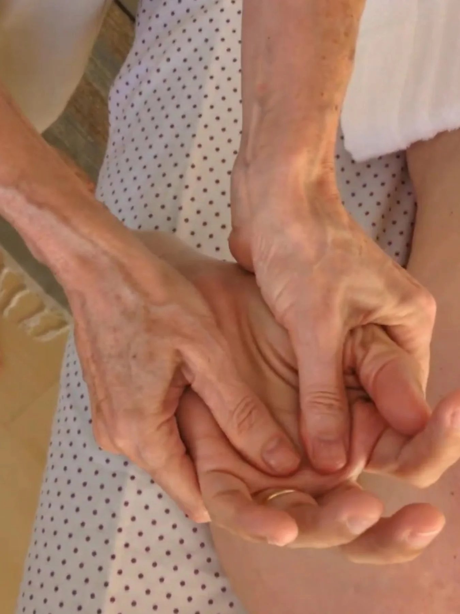

Há momentos em que o melhor remédio é uma presença que não tem pressa. Cuidar do conforto, da dignidade e do toque que acalma.
Quando o foco deixa de ser curar e passa a ser cuidar, cada gesto ganha um valor imenso. A massagem de conforto não promete o impossível. Ela oferece algo simples e profundo: alívio, presença e a certeza de não estar sozinho.

Nos cuidados paliativos, a massagem é suave, lenta e respeitosa. Ela ajuda a aliviar dores, a soltar tensões e a trazer calma para o corpo e para a mente, sem nenhum esforço de quem recebe.
Rosana cuida da pessoa por inteiro. Da pele que precisa de toque, da respiração que pede serenidade e do coração que precisa sentir que ainda há cuidado e afeto.
Quem acompanha um ente querido também carrega um peso. A sala de cuidar é um espaço de acolhimento para todos, com escuta, respeito e a delicadeza de quem entende esse momento.
Alívio de dores e tensões, com toque suave e seguro, no tempo que o corpo permitir.
Mais do que técnica, companhia. Estar ali, com calma e sem pressa, faz diferença.
Respeito por cada história e por cada vontade. O cuidado que honra a pessoa.
"Cuidar é muito mais do que tratar. É segurar a mão, é ficar, é fazer o tempo ser mais leve."